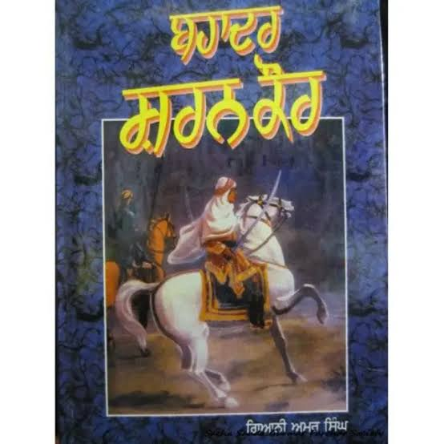

EST. 1704
ਬੀਬੀ ਸ਼ਰਨ ਕੌਰ
ਬੀਬੀ ਸ਼ਰਨ ਕੌਰ ਚਮਕੌਰ ਦੀ ਜੰਗ ਤੋਂ ਬਾਅਦ, ਜਦੋਂ ਵੱਡੇ ਸਾਹਿਬਜ਼ਾਦਿਆਂ ਅਤੇ ਹੋਰ ਸਿੰਘਾਂ ਦੀਆਂ ਸ਼ਹੀਦੀ ਦੇਹਾਂ ਮੈਦਾਨ ਵਿੱਚ ਸਨ, ਤਾਂ ਮੁਗਲ ਫ਼ੌਜਾਂ ਦਾ ਪਹਿਰਾ ਸੀ. ਬੀਬੀ ਸ਼ਰਨ ਕੌਰ ਨੇ ਆਪਣੀ ਜਾਨ ਦੀ ਪਰਵਾਹ ਕੀਤੇ ਬਿਨਾਂ, ਰਾਤ ਦੇ ਅੰਧੇਰੇ ਵਿੱਚ ਸਾਰੇ ਸ਼ਹੀਦਾਂ ਦੀਆਂ ਦੇਹਾਂ ਨੂੰ ਇਕੱਠਾ ਕਰਕੇ ਉਨ੍ਹਾਂ ਦਾ ਸਸਕਾਰ ਕੀਤਾ।